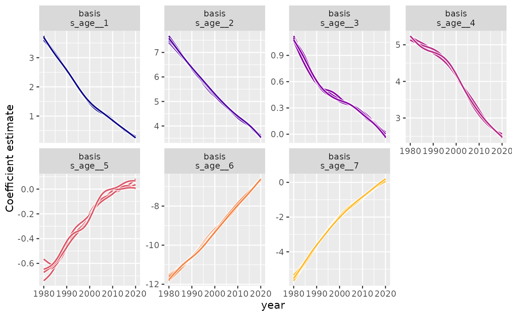

Fit a functional time series model using dynamic functional coefficients
Source:R/ffc_gam.R
ffc_gam.RdFit Generalized Additive Models that can include time-varying (dynamic) functions
Arguments
- formula
A GAM formula (see
formula.gamand alsogam.models). This is exactly like the formula for a GLM except that smooth terms,fts(),s()andte()can be added to the right hand side to specify that the linear predictor depends on smooth functions of predictors (or linear functionals of these).- family
This is a family object specifying the distribution and link to use in fitting etc. See
glmandfamilyfor more details. The extended families listed infamily.mgcvcan also be used.- data
A
data.framecontaining the variables in the model. Unlikegam,ffc_gamrequires data to be a data.frame and does not support list data structures.- time
characterspecifying which variable indatarepresents the the time ordering of the observations- engine
characterstring specifying which mgcv interface to use for fitting the model.- ...
other arguments to pass to either
gam
Value
An object of class ffc_gam, which inherits from objects of class gam or
bam. Use methods(class = "ffc_gam") to see available methods.
Details
This function will update the supplied formula to ensure any time-varying
functionals (supplied through fts() terms in the formula right hand side) are
appropriately incorporated into the model. It then passes the updated model and data
objects to the specified engine for model fitting
Examples
# Fit a dynamic function-on-function regression to the Queensland
# mortality data
data("qld_mortality")
mod <- ffc_gam(
deaths ~
offset(log(population)) +
sex +
fts(age,
k = 8,
time_k = 10
),
time = "year",
data = qld_mortality,
family = poisson(),
engine = "bam"
)
class(mod)
#> [1] "ffc_gam" "bam" "gam" "glm" "lm"
summary(mod)
#>
#> Family: poisson
#> Link function: log
#>
#> Formula:
#> deaths ~ sex + offset(log(population)) + s(year, by = fts_bs_s_age__1,
#> bs = "ts", k = 10, m = 2, id = 1) + s(year, by = fts_bs_s_age__2,
#> bs = "ts", k = 10, m = 2, id = 1) + s(year, by = fts_bs_s_age__3,
#> bs = "ts", k = 10, m = 2, id = 1) + s(year, by = fts_bs_s_age__4,
#> bs = "ts", k = 10, m = 2, id = 1) + s(year, by = fts_bs_s_age__5,
#> bs = "ts", k = 10, m = 2, id = 1) + s(year, by = fts_bs_s_age__6,
#> bs = "ts", k = 10, m = 2, id = 1) + s(year, by = fts_bs_s_age__7,
#> bs = "ts", k = 10, m = 2, id = 1)
#>
#> Parametric coefficients:
#> Estimate Std. Error z value Pr(>|z|)
#> (Intercept) -5.553606 0.002381 -2332.6 <2e-16 ***
#> sexmale 0.472665 0.002077 227.6 <2e-16 ***
#> ---
#> Signif. codes: 0 ‘***’ 0.001 ‘**’ 0.01 ‘*’ 0.05 ‘.’ 0.1 ‘ ’ 1
#>
#> Approximate significance of smooth terms:
#> edf Ref.df Chi.sq p-value
#> s(year):fts_bs_s_age__1 8.165 10 22396 <2e-16 ***
#> s(year):fts_bs_s_age__2 6.829 10 15647 <2e-16 ***
#> s(year):fts_bs_s_age__3 8.112 10 2883 <2e-16 ***
#> s(year):fts_bs_s_age__4 7.085 10 14643 <2e-16 ***
#> s(year):fts_bs_s_age__5 7.847 10 707 <2e-16 ***
#> s(year):fts_bs_s_age__6 5.923 10 23037 <2e-16 ***
#> s(year):fts_bs_s_age__7 6.259 10 8424 <2e-16 ***
#> ---
#> Signif. codes: 0 ‘***’ 0.001 ‘**’ 0.01 ‘*’ 0.05 ‘.’ 0.1 ‘ ’ 1
#>
#> R-sq.(adj) = 0.972 Deviance explained = 94.7%
#> fREML = 46558 Scale est. = 1 n = 8282
# Extract and visualize time-varying coefficients
coefs <- fts_coefs(mod, summary = FALSE, times = 5)
autoplot(coefs)

# Forecast future mortality patterns
future_data <- expand.grid(
age = unique(qld_mortality$age),
sex = unique(qld_mortality$sex),
year = 2021:2025,
population = 1 # Use rate scale (deaths per person)
)
# Generate forecasts using ETS model for coefficients
mortality_fc <- forecast(mod, newdata = future_data, model = "ETS",
type = "expected")
head(mortality_fc)
#> # A tibble: 6 × 6
#> .estimate .error .q2.5 .q10 .q90 .q97.5
#> <dbl> <dbl> <dbl> <dbl> <dbl> <dbl>
#> 1 0.00117 0.00116 0.00109 0.00112 0.00122 0.00125
#> 2 0.00104 0.00130 0.000979 0.000998 0.00108 0.00111
#> 3 0.000926 0.00137 0.000876 0.000892 0.000962 0.000983
#> 4 0.000826 0.00148 0.000786 0.000798 0.000855 0.000874
#> 5 0.000738 0.00153 0.000704 0.000716 0.000763 0.000780
#> 6 0.000663 0.00165 0.000634 0.000644 0.000685 0.000698